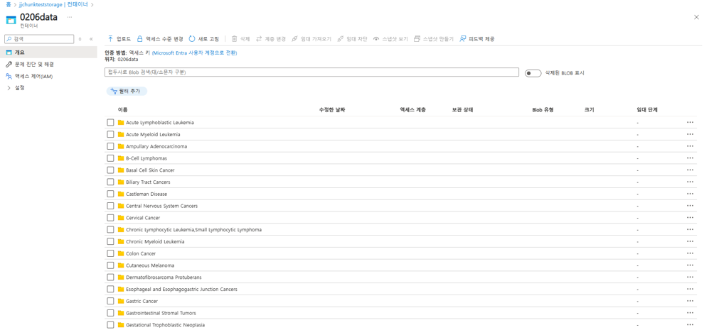
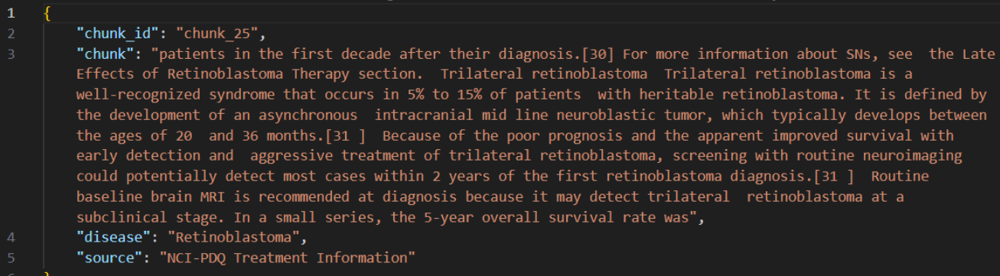
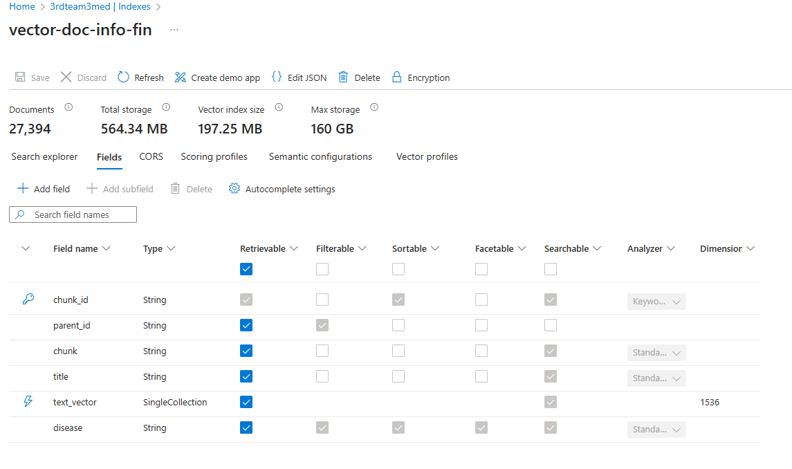
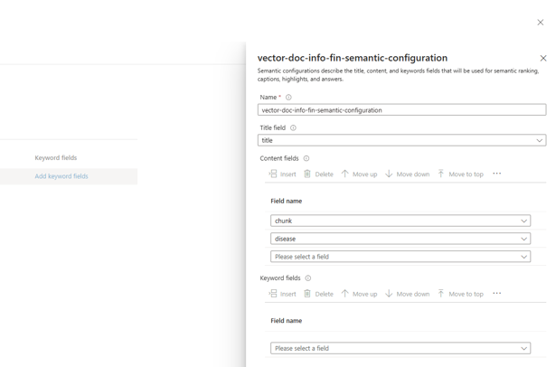
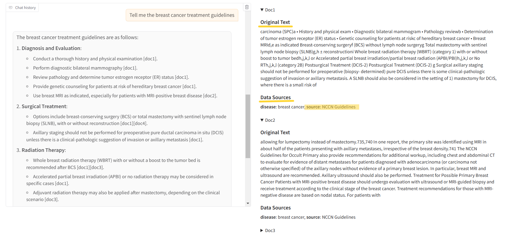
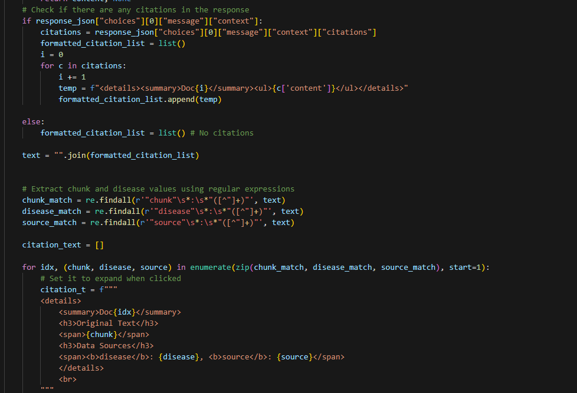
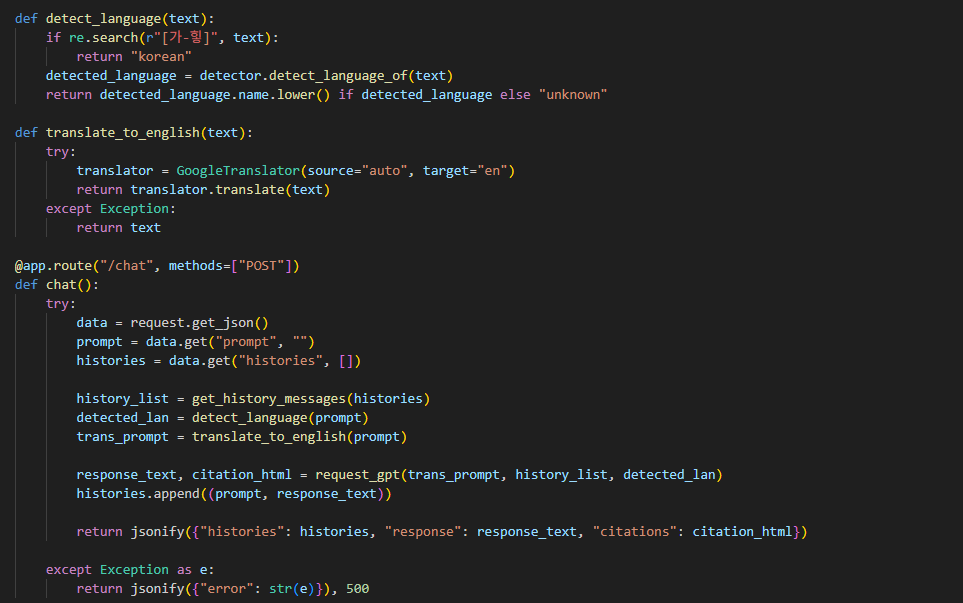
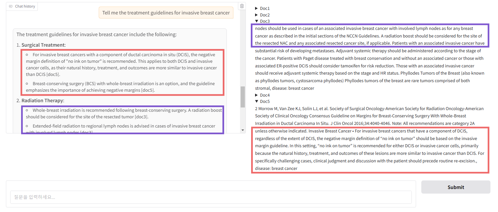
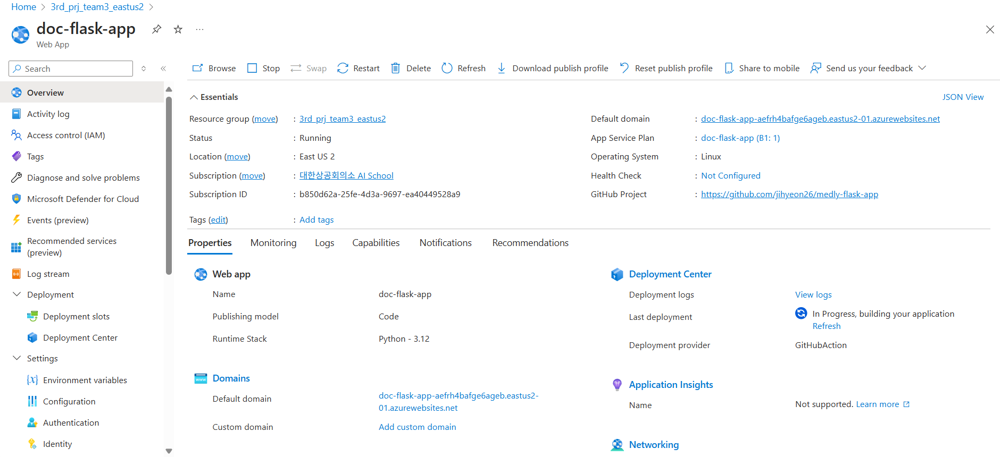
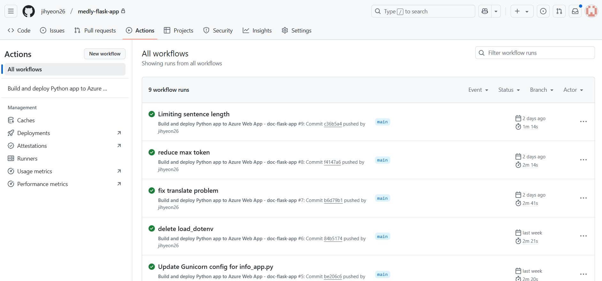

Development Process
1. Data Collection & Preprocessing
Reliable Data Sources: Surgical guideline PDFs were collected from authoritative sources such as NCCN, NCI, and PubMed Central (PMC), covering a total of 64 diseases.
Data Preprocessing: Only text within the main content area was extracted, excluding headers and footers. Unnecessary text and repeated characters were removed, and any remaining noise was eliminated using regular expressions.
Chunk Generation: To enhance search performance and maintain context, text was divided into chunks of 1,000 characters with a 100-character overlap.
JSON File Storage: Data was stored in JSON format, including disease names, chunk IDs, and data sources to ensure reliability.


[Data storage and the form of data cources]
2. Vectorization & Indexing
Data vectorizing:
Data is vectorized using text-embedding-ada-002 model, followed by the creation of indexes and indexers.
Disease-Based Search:
A disease field was added to the index to enable disease-specific searches.
Enhanced Search Performance:
Semantic search was integrated to improve retrieval accuracy and relevance.


[Configuring indexes and semantic search]
3. Chatbot Configuration & Improvements
Reference Area Display: Implemented to enhance response credibility by showing relevant source information. Only 'chunk', 'disease', and 'source fields' are extracted for improved data reliability and faster verification.
Parameter Settings: Configured with strict=5 and temperature=0.1 to ensure accurate and reliable responses.
Context Retention: Stores up to five previous responses to allow for follow-up questions and context-aware interactions.
Multilingual Support: Translates user queries into English before sending a request to the GPT model, improving search performance. Detects the language of the original question and returns the response in the same language for seamless multilingual support.

[Test screen using Gradio: Enhances data reliability through reference areas.]


[Citation output settings and language detection functions]
4. Response Performance & Reference Area Matching Test
- Responses are reviewed by practicing physicians and validated through Human Evaluation.
- Received direct feedback from physicians expressing interest in using the chatbot in real-world medical settings.
- Conducted over 100 tests to verify the alignment between generated responses and reference areas, ensuring accurate outputs.

[Using gradio to validate citation area during development]
5. Flask Server Deployment & CI/CD Configuration
Deployed Flask app to Azure App Service and configured environment variables.
Set up GitHub Actions CI/CD for automatic deployment on main branch updates, handling Python setup, dependencies, build, and deployment via .yml file.


[App deployment and GitHub actions integration]
 GitHub
GitHub